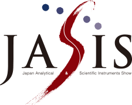

開催概要OUTLINE
JASISとは
人々の暮らしは、様々な科学の進歩の上に成り立っていると私たちは考えます。
その科学の進歩を支える、分析機器、科学機器メーカーが一堂に会する最先端科学・分析システム&ソリューション展がJASIS※です。
この分野でのアジア最大級の展示会として、世界をリードする各種業界、関連機関と更なる連携強化をはかり、将来の科学の進歩への貢献、ビジネス発展への発見がある場であることを目指しています。
※JASIS（ジャシス＝Japan Analytical & Scientific Instruments Showの頭文字）は、2012年の第50回分析展（日本分析機器工業会）と第35回科学機器展（日本科学機器協会）を機に、合同展の統一名称として定められたものです。

JASIS 2023 開催概要
| 名 称 | JASIS 2023 |
|---|---|
| 会 期 | 2023年9月6日（水）～8日（金）3日間 10:00 ～17:00 （JASIS WebExpo®2023 2023年7月5日（水）10:00～11月30日（金）17:00 |
| 会 場 | 幕張メッセ国際展示場 〒261-0023千葉県千葉市美浜区中瀬2-1 （JASIS WebExpo®2023 ：JASISメンバー専用Webサイト（会員数約9万人）） |
| 入 場 料 | 無料 |
| 主 催 | 一般社団法人日本分析機器工業会、一般社団法人日本科学機器協会 |
| JASIS 事務局 | 一般社団法人 日本分析機器工業会内 101-0054 東京都千代田区神田錦町2-5-16 名古路ビル新館6階 |
| 後 援（予定） | 経済産業省、文部科学省、環境省、公益社団法人日本分析化学会 他 |